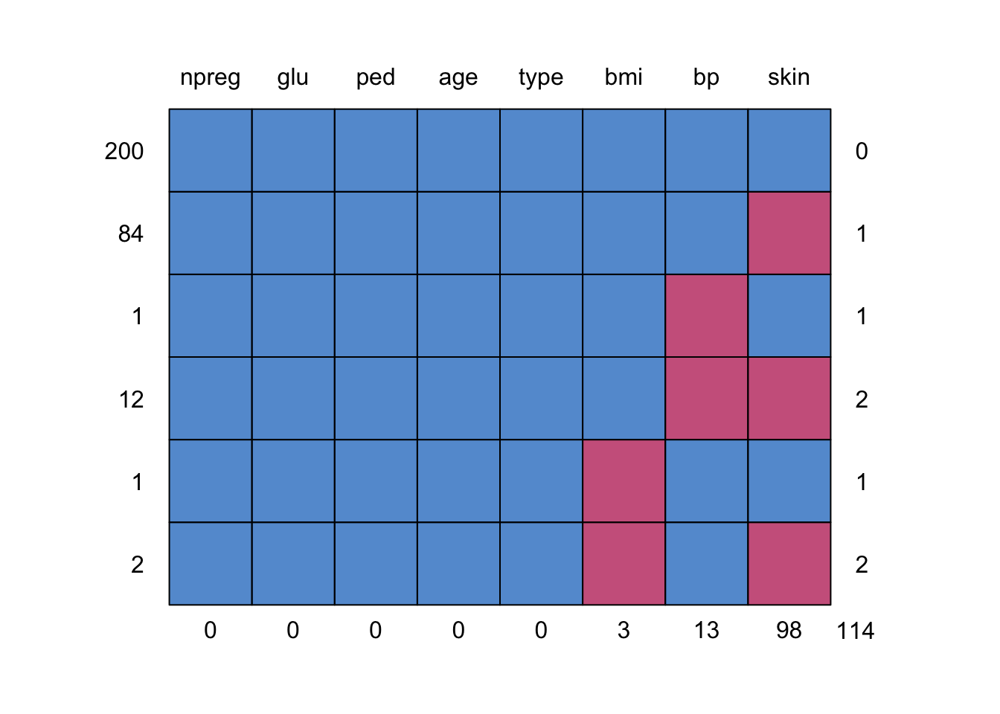
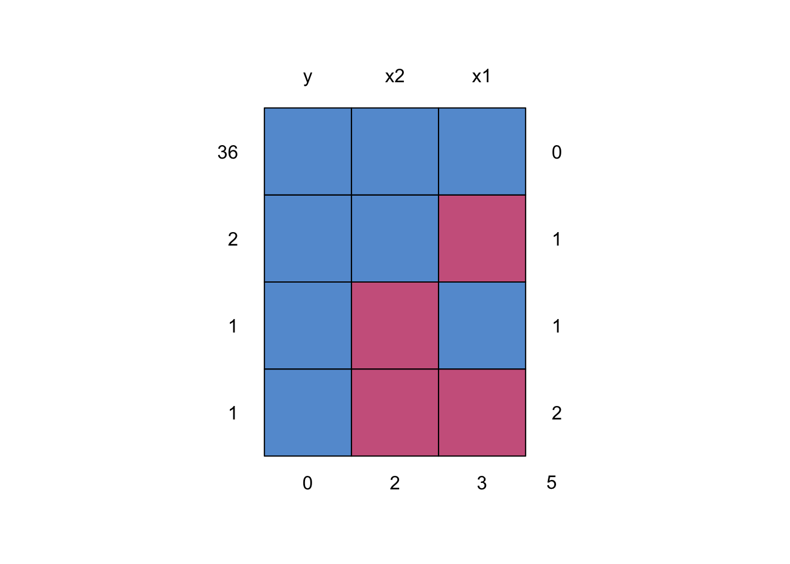
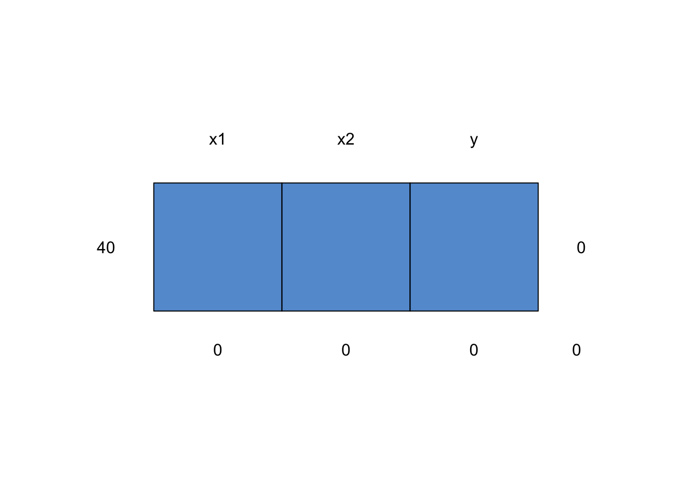
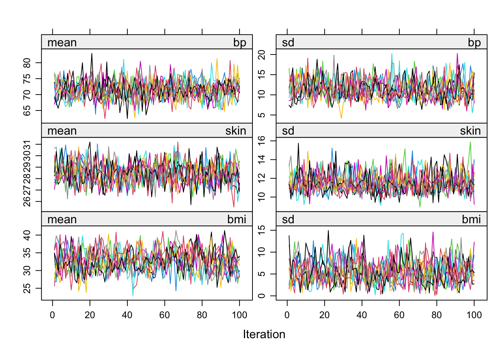
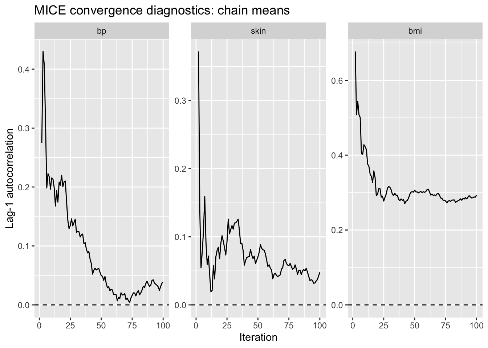
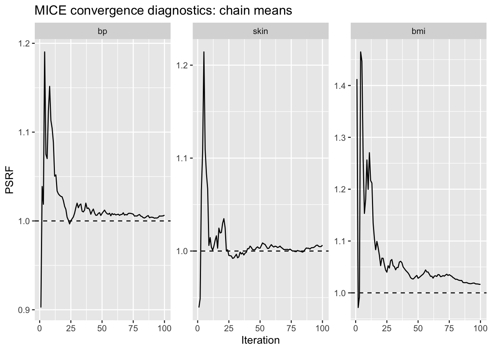
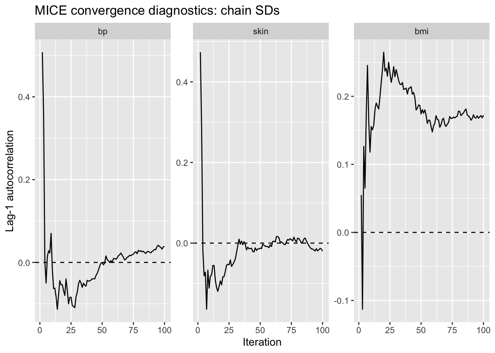
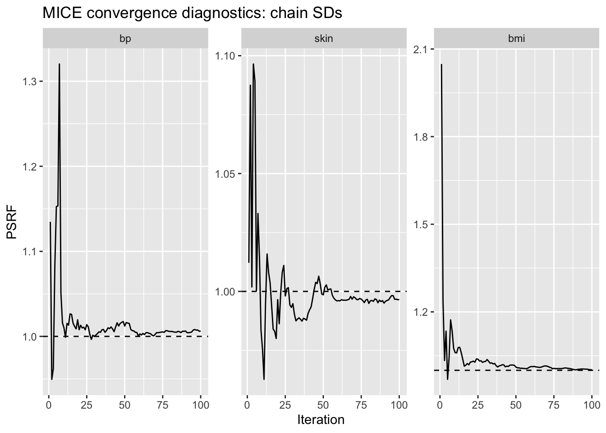
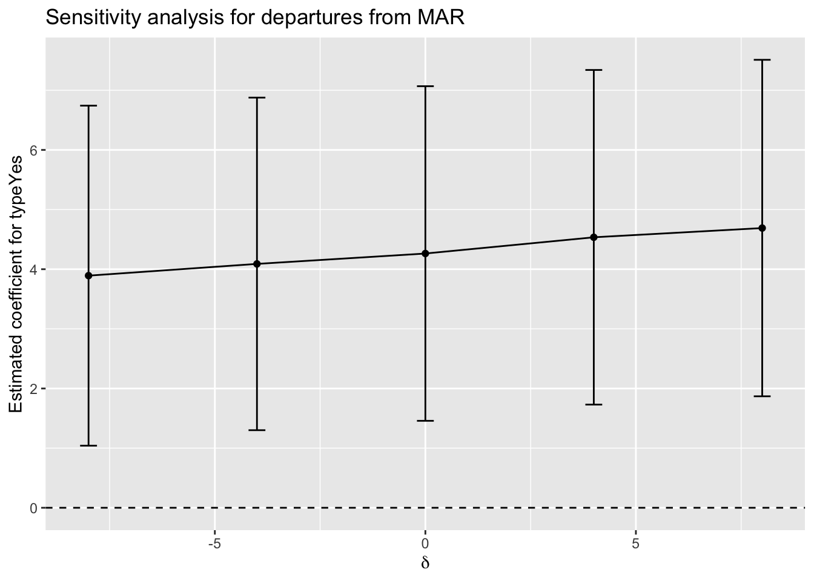

Chapter 10 Missing Data
In this shorter chapter, we discuss missing data. As a reminder, when there is missing data in a data frame, lm restricts to the complete cases. That is, lm runs a regression on only those observations for which there is no missing data in any of the variables. Depending on why the data is missing, this can lead to a loss of interpretive power, bias in the estimates of the coefficients, or worse outcomes. We will see examples of these (and simulations illustrating them) later in this chapter.
We start by discussing three types of missing data:
Missing Completely at Random (MCAR). Data that is MCAR is randomly missing in a way that doesn’t depend on any of observed or unobserved data. It is as if for each value in the data set, a random number was generated and the data point was removed if the random number satisfied a given property.
Missing at Random (MAR). This is unfortunately named and is very often misunderstood. The probability that a value is missing can depend on the other data, but it doesn’t depend on the value of the data itself. For example, blood pressure readings could be more often missing for younger patients, but once the probability of observing blood pressure is adjusted for age, the chance of it missing does not further depend on the blood pressure itself.
Missing not at Random (MNAR). Data that is MNAR if the probability that it is missing depends on the values themselves, even after adjusting for the other observed variables. For example, if some patients with high blood pressure refuse to allow their blood pressure to be taken. If this refusal is not predictable via the other variables in the data set, then the missing blood pressure would be missing not at random.
There are two older techniques of dealing with missing data - complete case analysis (the default in lm) and mean imputation, where all missing values are replaced with the mean (or mode if categorical) of the data. Neither of these techniques are currently considered best practices for dealing with missing data.
Current best practices invlolve imputing the missing data on the observed variables including the response. Ideally, we should include the uncertainty in our imputation by repeating the imputation multiple times. We then run an analysis for each multiply imputed data set and combine the results. This technique is called multiple imputation. Finally, a sensitivity analysis is recommended, which will help explain how sensitive the model is to our missingness assumptions.
For those of you coming from a machine learning or predictive modeling background, including the response should cause alarm bells to ring. But, we will see that it is indeed a good idea for interpretive models.
It is important to keep two things separate: First we will build an imputation model, which is used to impute missing data. Second we will build a model of the response, which is the interpretable model that we are looking for in the end.
Let’s see how all of this works with a specific data set. We consider the Pima.tr2 data set from the MASS package.
## # A tibble: 300 × 8
## npreg glu bp skin bmi ped age type
## <int> <int> <int> <int> <dbl> <dbl> <int> <fct>
## 1 5 86 68 28 30.2 0.364 24 No
## 2 7 195 70 33 25.1 0.163 55 Yes
## 3 5 77 82 41 35.8 0.156 35 No
## 4 0 165 76 43 47.9 0.259 26 No
## 5 0 107 60 25 26.4 0.133 23 No
## 6 5 97 76 27 35.6 0.378 52 Yes
## 7 3 83 58 31 34.3 0.336 25 No
## 8 1 193 50 16 25.9 0.655 24 No
## 9 3 142 80 15 32.4 0.2 63 No
## 10 2 128 78 37 43.3 1.22 31 Yes
## # ℹ 290 more rowsAccording to the documentation, a population of women who were at least 21 years old, of Pima Indian heritage and living near Phoenix, Arizona, was tested for diabetes according to World Health Organization criteria. The data were collected by the US National Institute of Diabetes and Digestive and Kidney Diseases.
## npreg glu bp skin
## Min. : 0.000 Min. : 56.0 Min. : 38.00 Min. : 7.00
## 1st Qu.: 1.000 1st Qu.:101.0 1st Qu.: 64.00 1st Qu.:21.00
## Median : 3.000 Median :121.0 Median : 72.00 Median :29.00
## Mean : 3.787 Mean :123.7 Mean : 72.32 Mean :29.15
## 3rd Qu.: 6.000 3rd Qu.:142.0 3rd Qu.: 80.00 3rd Qu.:36.00
## Max. :14.000 Max. :199.0 Max. :114.00 Max. :99.00
## NA's :13 NA's :98
## bmi ped age type
## Min. :18.20 Min. :0.0780 Min. :21.0 No :194
## 1st Qu.:27.10 1st Qu.:0.2367 1st Qu.:24.0 Yes:106
## Median :32.00 Median :0.3360 Median :29.0
## Mean :32.05 Mean :0.4357 Mean :33.1
## 3rd Qu.:36.50 3rd Qu.:0.5867 3rd Qu.:40.0
## Max. :52.90 Max. :2.2880 Max. :72.0
## NA's :3We see that there are quite a few missing values. Suppose we wanted to determine whether the blood pressure depends on the diabetic criterion. Let’s look at the pattern of missing data.

## npreg glu ped age type bmi bp skin
## 200 1 1 1 1 1 1 1 1 0
## 84 1 1 1 1 1 1 1 0 1
## 1 1 1 1 1 1 1 0 1 1
## 12 1 1 1 1 1 1 0 0 2
## 1 1 1 1 1 1 0 1 1 1
## 2 1 1 1 1 1 0 1 0 2
## 0 0 0 0 0 3 13 98 114We see that 84 observations are missing skin only, 1 is missing bp only, 12 are missing both skin and bp, etc. We certainly could just run a t-test on the 287 observed values. Realistically, that would be just fine. But, let’s see how we can do multiple imputation in this context.
We start by building the multiple imputation model, using the default methods. Setting m=20 ensures that we have 20 different data points imputed. A rule of thumb is that m should be as large as the percentage of observations with missing data, so in that case, we would set it equal to 33.
Next, we fit the model bp ~ type (which corresponds to a \(t\)-test but uses lm) using the imputed data.
## term estimate std.error statistic df p.value
## 1 (Intercept) 70.744588 0.8332498 84.902012 289.7984 9.057191e-207
## 2 typeYes 4.220978 1.4412727 2.928647 257.1075 3.709798e-03We see in the pooled model, we have a point of estimate of 4.22, so that women diabetis is associated with an increase of 4 units of blood pressure, and the \(p\)-value is \(0.00371\). Let’s compare that to what we would have obtained if we just used the complete cases.
##
## Call:
## lm(formula = bp ~ type, data = pp)
##
## Residuals:
## Min 1Q Median 3Q Max
## -35.255 -8.027 -0.799 7.201 39.201
##
## Coefficients:
## Estimate Std. Error t value Pr(>|t|)
## (Intercept) 70.7989 0.8388 84.405 <2e-16 ***
## typeYes 4.4562 1.4355 3.104 0.0021 **
## ---
## Signif. codes: 0 '***' 0.001 '**' 0.01 '*' 0.05 '.' 0.1 ' ' 1
##
## Residual standard error: 11.53 on 285 degrees of freedom
## (13 observations deleted due to missingness)
## Multiple R-squared: 0.03271, Adjusted R-squared: 0.02931
## F-statistic: 9.637 on 1 and 285 DF, p-value: 0.002099Pretty similar. That is not surprising since there were only 13 missing values of bp. Note that in this case, we got a smaller effect size, a larger standard error, and a higher \(p\)-value. Imputing missing data does not always change your model in the direction of more significance; it is a principled way of trying to handle missing data.
10.1 Technical Details
In this section, we discuss the technical details about how the imputation is made, and how the results are pooled to a single result. For simplicity, we will consider the following data set.
dd <- data.frame(
x1 = runif(40)
) |>
mutate(x2 = x1 + runif(40),
y = 1 + 2 * x2 + rnorm(40))
dd$x1[1:3] <- NA
dd$x2[c(1, 5)] <- NAWe have 5 missing values, distributed as follows:

## y x2 x1
## 36 1 1 1 0
## 2 1 1 0 1
## 1 1 0 1 1
## 1 1 0 0 2
## 0 2 3 5We start by assigning values to the missing values of x1 and x2.
aa <- dd |>
mutate(x1 = ifelse(is.na(x1), sample(x1[!is.na(x1)], size = 3, replace = T), x1),
x2 = ifelse(is.na(x2), sample(x1[!is.na(x2)], size = 3, replace = T), x2))
md.pattern(aa)## /\ /\
## { `---' }
## { O O }
## ==> V <== No need for mice. This data set is completely observed.
## \ \|/ /
## `-----'
## x1 x2 y
## 40 1 1 1 0
## 0 0 0 0It is unlikely that these are good choices for x1 and x2, but since they are sampled from existing values of the variables, at least we know they are possible values. For example, we know (because of the construction) that x1 needs to be between 0 and 1, and it will be for these poorly imputed values.
Next, we model x1 on the other variables.
Now, we need to choose a value of x1 that is close to the predicted value with some noise added in. We are not going to follow the exact procedure of mice here, but simplify it as follows. The way we add noise is by adding it to the coefficients rather than the predicted values. In this case, we will take a random draw from a multivariate normal distribution with mean of the predicted values of the coefficients and covariance matrix given by our estimate of that covariance matrix from lm.
## (Intercept) y x2
## 0.128775465 0.001728477 0.433429235## (Intercept) y x2
## 0.29480533 -0.04351301 0.39066677Now we predict our x1 variable from the perturbed values of the coefficients. We can compare to the prediction from the original value of the coefficients by using predict.
pp <- betadot %*% t(matrix(c(rep(1, times = length(missingx1)), aa$y[missingx1], aa$x2[missingx1]), nrow = length(missingx1)))
pp## [,1] [,2] [,3]
## [1,] 0.3901853 0.7349779 0.4545586## 1 2 3
## 0.3097650 0.5902952 0.4836123We don’t automatically take the closest value to the predicted values; we choose the nearest 5 or so closest values and choose one at random.
find_replacement <- function(vector, val) {
candidates <- sort(abs(vector - val), index.return = TRUE)$ix[1:5]
vector[sample(candidates, 1)]
}
find_replacement <- Vectorize(find_replacement, vectorize.args = "val")
aa$x1[missingx1] <- find_replacement(aa$x1, pp)Now, we repeat the entire process for the second predictor variable.
mod <- lm(x2 ~ y + x1, data = aa)
betadot <- MASS::mvrnorm(1, mu = coef(mod), Sigma = vcov(mod))
pp <- betadot %*% t(matrix(c(rep(1, times = length(missingx1)), aa$y[missingx1], aa$x2[missingx1]), nrow = length(missingx1)))
find_replacement <- Vectorize(find_replacement, vectorize.args = "val")
aa$x2[missingx1] <- find_replacement(aa$x2, pp)Then, we would repeat this a bunch of times for a burn-in or initialization phase, and after that burn-in, we would start to take values. The package name mice stands for multiple imputation by chained equations; the chaining is the repeating of the imputation like we are doing here.
To be clear, this leaves out some important steps along the way, but it does give the flavor of the algorithm.
Now that we have seen how it works for one stream, we need to get multiple imputations. mice will have as many streams as you want imputations, and after a number of iterations, it will take one data set from each stream. For diagnostics, what we like to see is that each of the streams is mixing well. They are offering similar ranges of values across each of the streams. You don’t want to see one stream off in Jefferson City while the other streams are in CWE. In practice, we will use the built in diagnostics to determine whether that is accurate.
10.2 Diagnostics
We return to our example above and look at the built in diagnostics. We re-run the imputation model to include more iterations and more streams.
pp <- MASS::Pima.tr2 |>
as_tibble()
imp <- mice(pp, m = 10, maxit = 100, seed = 2026, printFlag = FALSE)
plot(imp)
We can see that the chains seem to be mixing pretty well over the ten iterations shown. Now, we check convergence.
diag_mean <- convergence(imp, diagnostic = "all", parameter = "mean")
diag_mean |>
filter(!is.na(ac)) |>
head()## .it vrb ac psrf
## 1 2 bp 0.2744142 1.038749
## 2 3 bp 0.4300519 1.018780
## 3 4 bp 0.4068853 1.190329
## 4 5 bp 0.3075506 1.074987
## 5 6 bp 0.1984613 1.070197
## 6 7 bp 0.2225751 1.123700diag_sd <- convergence(imp, diagnostic = "all", parameter = "sd")
diag_sd |>
filter(!is.na(ac)) |>
head()## .it vrb ac psrf
## 1 2 bp 0.507853979 0.9494988
## 2 3 bp 0.357216306 0.9620480
## 3 4 bp 0.002698788 1.0827214
## 4 5 bp -0.049755635 1.1526683
## 5 6 bp 0.014085274 1.1534442
## 6 7 bp 0.028220096 1.3202511The psrf variable is measuring the variance of the variable within the stream versus the variance of the variable between the streams. Ideally, this should be close to 1. The ac variable is measuring the autocorrelation of the variable. Ideally, this should be close to 0. However, possibly more important than the values of the statistics is the behavior of the statistics. If the statistic shows a clear decreasing trend over iterations, then that is evidence that the stream has not yet fully converged, and we should consider running the stream for more iterations. Let’s look at some plots.
## .it vrb ac psrf
## 1 1 npreg NA NA
## 2 2 npreg NA NA
## 3 3 npreg NA NA
## 4 4 npreg NA NA
## 5 5 npreg NA NA
## 6 6 npreg NA NA
## 7 7 npreg NA NA
## 8 8 npreg NA NA
## 9 9 npreg NA NA
## 10 10 npreg NA NA
## 11 11 npreg NA NA
## 12 12 npreg NA NA
## 13 13 npreg NA NA
## 14 14 npreg NA NA
## 15 15 npreg NA NA
## 16 16 npreg NA NA
## 17 17 npreg NA NA
## 18 18 npreg NA NA
## 19 19 npreg NA NA
## 20 20 npreg NA NA
## 21 21 npreg NA NA
## 22 22 npreg NA NA
## 23 23 npreg NA NA
## 24 24 npreg NA NA
## 25 25 npreg NA NA
## 26 26 npreg NA NA
## 27 27 npreg NA NA
## 28 28 npreg NA NA
## 29 29 npreg NA NA
## 30 30 npreg NA NA
## 31 31 npreg NA NA
## 32 32 npreg NA NA
## 33 33 npreg NA NA
## 34 34 npreg NA NA
## 35 35 npreg NA NA
## 36 36 npreg NA NA
## 37 37 npreg NA NA
## 38 38 npreg NA NA
## 39 39 npreg NA NA
## 40 40 npreg NA NA
## 41 41 npreg NA NA
## 42 42 npreg NA NA
## 43 43 npreg NA NA
## 44 44 npreg NA NA
## 45 45 npreg NA NA
## 46 46 npreg NA NA
## 47 47 npreg NA NA
## 48 48 npreg NA NA
## 49 49 npreg NA NA
## 50 50 npreg NA NA
## 51 51 npreg NA NA
## 52 52 npreg NA NA
## 53 53 npreg NA NA
## 54 54 npreg NA NA
## 55 55 npreg NA NA
## 56 56 npreg NA NA
## 57 57 npreg NA NA
## 58 58 npreg NA NA
## 59 59 npreg NA NA
## 60 60 npreg NA NA
## 61 61 npreg NA NA
## 62 62 npreg NA NA
## 63 63 npreg NA NA
## 64 64 npreg NA NA
## 65 65 npreg NA NA
## 66 66 npreg NA NA
## 67 67 npreg NA NA
## 68 68 npreg NA NA
## 69 69 npreg NA NA
## 70 70 npreg NA NA
## 71 71 npreg NA NA
## 72 72 npreg NA NA
## 73 73 npreg NA NA
## 74 74 npreg NA NA
## 75 75 npreg NA NA
## 76 76 npreg NA NA
## 77 77 npreg NA NA
## 78 78 npreg NA NA
## 79 79 npreg NA NA
## 80 80 npreg NA NA
## 81 81 npreg NA NA
## 82 82 npreg NA NA
## 83 83 npreg NA NA
## 84 84 npreg NA NA
## 85 85 npreg NA NA
## 86 86 npreg NA NA
## 87 87 npreg NA NA
## 88 88 npreg NA NA
## 89 89 npreg NA NA
## 90 90 npreg NA NA
## 91 91 npreg NA NA
## 92 92 npreg NA NA
## 93 93 npreg NA NA
## 94 94 npreg NA NA
## 95 95 npreg NA NA
## 96 96 npreg NA NA
## 97 97 npreg NA NA
## 98 98 npreg NA NA
## 99 99 npreg NA NA
## 100 100 npreg NA NA
## 101 1 glu NA NA
## 102 2 glu NA NA
## 103 3 glu NA NA
## 104 4 glu NA NA
## 105 5 glu NA NA
## 106 6 glu NA NA
## 107 7 glu NA NA
## 108 8 glu NA NA
## 109 9 glu NA NA
## 110 10 glu NA NA
## 111 11 glu NA NA
## 112 12 glu NA NA
## 113 13 glu NA NA
## 114 14 glu NA NA
## 115 15 glu NA NA
## 116 16 glu NA NA
## 117 17 glu NA NA
## 118 18 glu NA NA
## 119 19 glu NA NA
## 120 20 glu NA NA
## 121 21 glu NA NA
## 122 22 glu NA NA
## 123 23 glu NA NA
## 124 24 glu NA NA
## 125 25 glu NA NA
## 126 26 glu NA NA
## 127 27 glu NA NA
## 128 28 glu NA NA
## 129 29 glu NA NA
## 130 30 glu NA NA
## 131 31 glu NA NA
## 132 32 glu NA NA
## 133 33 glu NA NA
## 134 34 glu NA NA
## 135 35 glu NA NA
## 136 36 glu NA NA
## 137 37 glu NA NA
## 138 38 glu NA NA
## 139 39 glu NA NA
## 140 40 glu NA NA
## 141 41 glu NA NA
## 142 42 glu NA NA
## 143 43 glu NA NA
## 144 44 glu NA NA
## 145 45 glu NA NA
## 146 46 glu NA NA
## 147 47 glu NA NA
## 148 48 glu NA NA
## 149 49 glu NA NA
## 150 50 glu NA NA
## 151 51 glu NA NA
## 152 52 glu NA NA
## 153 53 glu NA NA
## 154 54 glu NA NA
## 155 55 glu NA NA
## 156 56 glu NA NA
## 157 57 glu NA NA
## 158 58 glu NA NA
## 159 59 glu NA NA
## 160 60 glu NA NA
## 161 61 glu NA NA
## 162 62 glu NA NA
## 163 63 glu NA NA
## 164 64 glu NA NA
## 165 65 glu NA NA
## 166 66 glu NA NA
## 167 67 glu NA NA
## 168 68 glu NA NA
## 169 69 glu NA NA
## 170 70 glu NA NA
## 171 71 glu NA NA
## 172 72 glu NA NA
## 173 73 glu NA NA
## 174 74 glu NA NA
## 175 75 glu NA NA
## 176 76 glu NA NA
## 177 77 glu NA NA
## 178 78 glu NA NA
## 179 79 glu NA NA
## 180 80 glu NA NA
## 181 81 glu NA NA
## 182 82 glu NA NA
## 183 83 glu NA NA
## 184 84 glu NA NA
## 185 85 glu NA NA
## 186 86 glu NA NA
## 187 87 glu NA NA
## 188 88 glu NA NA
## 189 89 glu NA NA
## 190 90 glu NA NA
## 191 91 glu NA NA
## 192 92 glu NA NA
## 193 93 glu NA NA
## 194 94 glu NA NA
## 195 95 glu NA NA
## 196 96 glu NA NA
## 197 97 glu NA NA
## 198 98 glu NA NA
## 199 99 glu NA NA
## 200 100 glu NA NA
## 201 1 bp NA 0.9025134
## 202 2 bp 0.274414205 1.0387489
## 203 3 bp 0.430051921 1.0187798
## 204 4 bp 0.406885333 1.1903288
## 205 5 bp 0.307550622 1.0749873
## 206 6 bp 0.198461321 1.0701969
## 207 7 bp 0.222575139 1.1236995
## 208 8 bp 0.217432384 1.1515554
## 209 9 bp 0.196347299 1.1132163
## 210 10 bp 0.215475198 1.1042642
## 211 11 bp 0.213538252 1.0885568
## 212 12 bp 0.198923447 1.0504048
## 213 13 bp 0.167758125 1.0518121
## 214 14 bp 0.193705678 1.0337010
## 215 15 bp 0.174332845 1.0305253
## 216 16 bp 0.208344446 1.0288402
## 217 17 bp 0.202958761 1.0276775
## 218 18 bp 0.220073279 1.0271214
## 219 19 bp 0.200456822 1.0229107
## 220 20 bp 0.208761502 1.0164417
## 221 21 bp 0.210108205 1.0129716
## 222 22 bp 0.175249762 1.0041591
## 223 23 bp 0.143887453 1.0009483
## 224 24 bp 0.129443631 0.9966360
## 225 25 bp 0.134678748 1.0002171
## 226 26 bp 0.146060858 1.0024162
## 227 27 bp 0.133987829 1.0044595
## 228 28 bp 0.139721571 1.0087099
## 229 29 bp 0.145214800 1.0149400
## 230 30 bp 0.123229977 1.0200401
## 231 31 bp 0.124855296 1.0148580
## 232 32 bp 0.124210420 1.0179424
## 233 33 bp 0.115326424 1.0190637
## 234 34 bp 0.119105684 1.0109681
## 235 35 bp 0.120154398 1.0101430
## 236 36 bp 0.104118370 1.0122440
## 237 37 bp 0.105709538 1.0200563
## 238 38 bp 0.094488898 1.0140192
## 239 39 bp 0.088186740 1.0145891
## 240 40 bp 0.090529549 1.0126118
## 241 41 bp 0.077692640 1.0075130
## 242 42 bp 0.070034645 1.0109707
## 243 43 bp 0.052149815 1.0133681
## 244 44 bp 0.058742054 1.0089314
## 245 45 bp 0.062255886 1.0063450
## 246 46 bp 0.059300771 1.0064670
## 247 47 bp 0.060803766 1.0084986
## 248 48 bp 0.061949224 1.0093106
## 249 49 bp 0.055336503 1.0061609
## 250 50 bp 0.049697937 1.0084699
## 251 51 bp 0.048495011 1.0104261
## 252 52 bp 0.041747146 1.0121765
## 253 53 bp 0.048222987 1.0097478
## 254 54 bp 0.036795814 1.0081610
## 255 55 bp 0.029018321 1.0075074
## 256 56 bp 0.030931976 1.0086999
## 257 57 bp 0.024187541 1.0057997
## 258 58 bp 0.026450424 1.0083583
## 259 59 bp 0.025380839 1.0072083
## 260 60 bp 0.017620034 1.0078651
## 261 61 bp 0.017482909 1.0067724
## 262 62 bp 0.017682641 1.0071748
## 263 63 bp 0.006842298 1.0075550
## 264 64 bp 0.012778183 1.0063276
## 265 65 bp 0.010930566 1.0071442
## 266 66 bp 0.020524308 1.0073489
## 267 67 bp 0.016778845 1.0091820
## 268 68 bp 0.017228310 1.0065640
## 269 69 bp 0.019209224 1.0072824
## 270 70 bp 0.009011122 1.0067336
## 271 71 bp 0.011481623 1.0084131
## 272 72 bp 0.006865745 1.0086601
## 273 73 bp 0.004461631 1.0084611
## 274 74 bp 0.011721838 1.0081006
## 275 75 bp 0.016181339 1.0075865
## 276 76 bp 0.020448524 1.0054310
## 277 77 bp 0.020029745 1.0056514
## 278 78 bp 0.015205879 1.0054975
## 279 79 bp 0.021088250 1.0065817
## 280 80 bp 0.024103636 1.0072178
## 281 81 bp 0.017226903 1.0055094
## 282 82 bp 0.020470147 1.0049607
## 283 83 bp 0.025257063 1.0036371
## 284 84 bp 0.031629678 1.0032927
## 285 85 bp 0.029660350 1.0041489
## 286 86 bp 0.036051819 1.0053172
## 287 87 bp 0.040190888 1.0060372
## 288 88 bp 0.035175626 1.0036307
## 289 89 bp 0.031328888 1.0041208
## 290 90 bp 0.033273247 1.0042066
## 291 91 bp 0.041493151 1.0038420
## 292 92 bp 0.042568407 1.0031100
## 293 93 bp 0.037169206 1.0033743
## 294 94 bp 0.034966851 1.0032195
## 295 95 bp 0.033426739 1.0039513
## 296 96 bp 0.030646134 1.0055889
## 297 97 bp 0.024812634 1.0054168
## 298 98 bp 0.031180634 1.0055583
## 299 99 bp 0.036541898 1.0056715
## 300 100 bp 0.039135143 1.0064919
## 301 1 skin NA 0.9392308
## 302 2 skin 0.372223252 0.9488168
## 303 3 skin 0.140734618 1.0662009
## 304 4 skin 0.054346152 1.1078878
## 305 5 skin 0.078304801 1.2142773
## 306 6 skin 0.108591403 1.1095276
## 307 7 skin 0.159140447 1.0834994
## 308 8 skin 0.092159073 1.0670830
## 309 9 skin 0.059611367 1.0059976
## 310 10 skin 0.071736549 1.0144795
## 311 11 skin 0.043896800 1.0041809
## 312 12 skin 0.019176783 1.0008727
## 313 13 skin 0.021294577 1.0052582
## 314 14 skin 0.057801845 1.0115318
## 315 15 skin 0.038177934 1.0163711
## 316 16 skin 0.070689623 1.0030835
## 317 17 skin 0.079988387 1.0246860
## 318 18 skin 0.084638834 1.0194109
## 319 19 skin 0.067733009 1.0200221
## 320 20 skin 0.090443647 1.0298760
## 321 21 skin 0.101572548 1.0348413
## 322 22 skin 0.093391312 1.0250387
## 323 23 skin 0.084075697 1.0001735
## 324 24 skin 0.073307115 1.0012835
## 325 25 skin 0.092970833 0.9952200
## 326 26 skin 0.126002425 0.9949920
## 327 27 skin 0.104408366 0.9946431
## 328 28 skin 0.110585591 0.9921053
## 329 29 skin 0.116367069 0.9926126
## 330 30 skin 0.111245292 0.9944718
## 331 31 skin 0.120231693 0.9965228
## 332 32 skin 0.120474456 0.9926857
## 333 33 skin 0.122654800 0.9937627
## 334 34 skin 0.125977473 0.9988956
## 335 35 skin 0.109555590 0.9967925
## 336 36 skin 0.089919406 0.9981086
## 337 37 skin 0.090687101 0.9957392
## 338 38 skin 0.079893834 0.9977272
## 339 39 skin 0.058370001 0.9987136
## 340 40 skin 0.065261707 1.0025779
## 341 41 skin 0.069596003 1.0025765
## 342 42 skin 0.070605470 1.0052945
## 343 43 skin 0.071249805 1.0038808
## 344 44 skin 0.081476322 1.0015167
## 345 45 skin 0.073215470 1.0013681
## 346 46 skin 0.068047653 1.0014701
## 347 47 skin 0.071587294 1.0034748
## 348 48 skin 0.060395694 1.0044861
## 349 49 skin 0.065638247 1.0031789
## 350 50 skin 0.070566432 1.0030880
## 351 51 skin 0.077449492 1.0059002
## 352 52 skin 0.088319188 1.0087055
## 353 53 skin 0.083267542 1.0077373
## 354 54 skin 0.080786367 1.0070945
## 355 55 skin 0.080472816 1.0048509
## 356 56 skin 0.075125771 1.0027556
## 357 57 skin 0.066021992 1.0029203
## 358 58 skin 0.056440418 1.0050142
## 359 59 skin 0.058896001 1.0068744
## 360 60 skin 0.054038641 1.0053085
## 361 61 skin 0.051182397 1.0043209
## 362 62 skin 0.038298816 1.0052107
## 363 63 skin 0.044789286 1.0048479
## 364 64 skin 0.046509528 1.0038495
## 365 65 skin 0.043118433 1.0043036
## 366 66 skin 0.041683609 1.0053048
## 367 67 skin 0.042713670 1.0038111
## 368 68 skin 0.044183291 1.0029125
## 369 69 skin 0.052554766 1.0016310
## 370 70 skin 0.054726895 1.0016300
## 371 71 skin 0.065316276 1.0016743
## 372 72 skin 0.066737936 1.0017553
## 373 73 skin 0.060824814 1.0011767
## 374 74 skin 0.058489230 1.0020542
## 375 75 skin 0.057503994 1.0010559
## 376 76 skin 0.060916970 1.0000152
## 377 77 skin 0.056185480 1.0001200
## 378 78 skin 0.052438053 0.9994463
## 379 79 skin 0.053465912 0.9994019
## 380 80 skin 0.058787627 1.0005621
## 381 81 skin 0.052917270 1.0000798
## 382 82 skin 0.044813514 0.9998434
## 383 83 skin 0.050579460 0.9994333
## 384 84 skin 0.051020304 0.9988661
## 385 85 skin 0.044431748 0.9996718
## 386 86 skin 0.049925749 1.0016007
## 387 87 skin 0.051842885 1.0032396
## 388 88 skin 0.050191820 1.0030239
## 389 89 skin 0.053736346 1.0029833
## 390 90 skin 0.048340107 1.0021089
## 391 91 skin 0.042050456 1.0034754
## 392 92 skin 0.035819512 1.0036520
## 393 93 skin 0.036983363 1.0038159
## 394 94 skin 0.036058971 1.0048018
## 395 95 skin 0.031747521 1.0060837
## 396 96 skin 0.032159894 1.0063520
## 397 97 skin 0.035057650 1.0050222
## 398 98 skin 0.037084102 1.0046647
## 399 99 skin 0.042594045 1.0049388
## 400 100 skin 0.047875716 1.0063121
## 401 1 bmi NA 1.4124661
## 402 2 bmi 0.677214836 0.9717428
## 403 3 bmi 0.507819101 0.9920967
## 404 4 bmi 0.544035675 1.4648538
## 405 5 bmi 0.508151200 1.4464320
## 406 6 bmi 0.500658939 1.2574425
## 407 7 bmi 0.403791365 1.1532277
## 408 8 bmi 0.402493101 1.1805472
## 409 9 bmi 0.427875887 1.2564418
## 410 10 bmi 0.422706151 1.1997014
## 411 11 bmi 0.414863661 1.2703506
## 412 12 bmi 0.376044131 1.2166153
## 413 13 bmi 0.370468507 1.2117157
## 414 14 bmi 0.349526058 1.1342888
## 415 15 bmi 0.343422897 1.1047895
## 416 16 bmi 0.327234570 1.0832443
## 417 17 bmi 0.357963288 1.0993032
## 418 18 bmi 0.340266299 1.0873200
## 419 19 bmi 0.291845288 1.0724797
## 420 20 bmi 0.295112875 1.0525320
## 421 21 bmi 0.310490473 1.0669763
## 422 22 bmi 0.310365014 1.0666358
## 423 23 bmi 0.288106305 1.0544028
## 424 24 bmi 0.290521307 1.0439636
## 425 25 bmi 0.277425873 1.0399155
## 426 26 bmi 0.287266524 1.0523939
## 427 27 bmi 0.296133450 1.0478569
## 428 28 bmi 0.311676583 1.0621668
## 429 29 bmi 0.316222598 1.0643175
## 430 30 bmi 0.314079938 1.0524047
## 431 31 bmi 0.307604915 1.0506034
## 432 32 bmi 0.295302681 1.0444720
## 433 33 bmi 0.292916764 1.0489563
## 434 34 bmi 0.298239209 1.0490092
## 435 35 bmi 0.292841866 1.0593087
## 436 36 bmi 0.292578849 1.0609027
## 437 37 bmi 0.282628262 1.0584058
## 438 38 bmi 0.278363776 1.0502323
## 439 39 bmi 0.283209124 1.0468650
## 440 40 bmi 0.279465118 1.0435432
## 441 41 bmi 0.281440992 1.0410221
## 442 42 bmi 0.270620254 1.0383598
## 443 43 bmi 0.276947866 1.0345720
## 444 44 bmi 0.278918860 1.0294092
## 445 45 bmi 0.284862977 1.0274430
## 446 46 bmi 0.294805504 1.0266765
## 447 47 bmi 0.301081105 1.0286903
## 448 48 bmi 0.302467802 1.0315248
## 449 49 bmi 0.301210671 1.0335966
## 450 50 bmi 0.306542923 1.0281527
## 451 51 bmi 0.301833717 1.0298232
## 452 52 bmi 0.301762760 1.0319523
## 453 53 bmi 0.299340288 1.0340283
## 454 54 bmi 0.301465668 1.0359858
## 455 55 bmi 0.302860835 1.0393661
## 456 56 bmi 0.300275018 1.0442429
## 457 57 bmi 0.302267180 1.0403803
## 458 58 bmi 0.300847206 1.0402092
## 459 59 bmi 0.302749573 1.0360432
## 460 60 bmi 0.308020186 1.0318976
## 461 61 bmi 0.309070177 1.0321040
## 462 62 bmi 0.301832119 1.0284094
## 463 63 bmi 0.293367014 1.0323694
## 464 64 bmi 0.295621858 1.0328751
## 465 65 bmi 0.292679052 1.0316633
## 466 66 bmi 0.293834792 1.0352867
## 467 67 bmi 0.291669064 1.0348379
## 468 68 bmi 0.296245460 1.0312249
## 469 69 bmi 0.297864438 1.0318171
## 470 70 bmi 0.293369881 1.0333642
## 471 71 bmi 0.285627057 1.0322283
## 472 72 bmi 0.284760432 1.0343339
## 473 73 bmi 0.279587970 1.0359536
## 474 74 bmi 0.279870850 1.0336035
## 475 75 bmi 0.277670305 1.0350682
## 476 76 bmi 0.272432601 1.0334043
## 477 77 bmi 0.277233501 1.0319938
## 478 78 bmi 0.278782963 1.0296037
## 479 79 bmi 0.276425764 1.0281211
## 480 80 bmi 0.279970956 1.0261301
## 481 81 bmi 0.280040752 1.0263415
## 482 82 bmi 0.280400777 1.0250412
## 483 83 bmi 0.273759850 1.0241237
## 484 84 bmi 0.276220265 1.0238572
## 485 85 bmi 0.278335100 1.0237980
## 486 86 bmi 0.279879622 1.0200791
## 487 87 bmi 0.283256564 1.0196745
## 488 88 bmi 0.279679009 1.0197495
## 489 89 bmi 0.284375100 1.0198943
## 490 90 bmi 0.282684812 1.0186398
## 491 91 bmi 0.286653192 1.0179958
## 492 92 bmi 0.283263071 1.0176917
## 493 93 bmi 0.287284977 1.0180754
## 494 94 bmi 0.291782348 1.0188286
## 495 95 bmi 0.288422359 1.0189368
## 496 96 bmi 0.285646575 1.0174268
## 497 97 bmi 0.286225262 1.0172131
## 498 98 bmi 0.288433044 1.0170575
## 499 99 bmi 0.287950715 1.0164987
## 500 100 bmi 0.293198564 1.0163612
## 501 1 ped NA NA
## 502 2 ped NA NA
## 503 3 ped NA NA
## 504 4 ped NA NA
## 505 5 ped NA NA
## 506 6 ped NA NA
## 507 7 ped NA NA
## 508 8 ped NA NA
## 509 9 ped NA NA
## 510 10 ped NA NA
## 511 11 ped NA NA
## 512 12 ped NA NA
## 513 13 ped NA NA
## 514 14 ped NA NA
## 515 15 ped NA NA
## 516 16 ped NA NA
## 517 17 ped NA NA
## 518 18 ped NA NA
## 519 19 ped NA NA
## 520 20 ped NA NA
## 521 21 ped NA NA
## 522 22 ped NA NA
## 523 23 ped NA NA
## 524 24 ped NA NA
## 525 25 ped NA NA
## 526 26 ped NA NA
## 527 27 ped NA NA
## 528 28 ped NA NA
## 529 29 ped NA NA
## 530 30 ped NA NA
## 531 31 ped NA NA
## 532 32 ped NA NA
## 533 33 ped NA NA
## 534 34 ped NA NA
## 535 35 ped NA NA
## 536 36 ped NA NA
## 537 37 ped NA NA
## 538 38 ped NA NA
## 539 39 ped NA NA
## 540 40 ped NA NA
## 541 41 ped NA NA
## 542 42 ped NA NA
## 543 43 ped NA NA
## 544 44 ped NA NA
## 545 45 ped NA NA
## 546 46 ped NA NA
## 547 47 ped NA NA
## 548 48 ped NA NA
## 549 49 ped NA NA
## 550 50 ped NA NA
## 551 51 ped NA NA
## 552 52 ped NA NA
## 553 53 ped NA NA
## 554 54 ped NA NA
## 555 55 ped NA NA
## 556 56 ped NA NA
## 557 57 ped NA NA
## 558 58 ped NA NA
## 559 59 ped NA NA
## 560 60 ped NA NA
## 561 61 ped NA NA
## 562 62 ped NA NA
## 563 63 ped NA NA
## 564 64 ped NA NA
## 565 65 ped NA NA
## 566 66 ped NA NA
## 567 67 ped NA NA
## 568 68 ped NA NA
## 569 69 ped NA NA
## 570 70 ped NA NA
## 571 71 ped NA NA
## 572 72 ped NA NA
## 573 73 ped NA NA
## 574 74 ped NA NA
## 575 75 ped NA NA
## 576 76 ped NA NA
## 577 77 ped NA NA
## 578 78 ped NA NA
## 579 79 ped NA NA
## 580 80 ped NA NA
## 581 81 ped NA NA
## 582 82 ped NA NA
## 583 83 ped NA NA
## 584 84 ped NA NA
## 585 85 ped NA NA
## 586 86 ped NA NA
## 587 87 ped NA NA
## 588 88 ped NA NA
## 589 89 ped NA NA
## 590 90 ped NA NA
## 591 91 ped NA NA
## 592 92 ped NA NA
## 593 93 ped NA NA
## 594 94 ped NA NA
## 595 95 ped NA NA
## 596 96 ped NA NA
## 597 97 ped NA NA
## 598 98 ped NA NA
## 599 99 ped NA NA
## 600 100 ped NA NA
## 601 1 age NA NA
## 602 2 age NA NA
## 603 3 age NA NA
## 604 4 age NA NA
## 605 5 age NA NA
## 606 6 age NA NA
## 607 7 age NA NA
## 608 8 age NA NA
## 609 9 age NA NA
## 610 10 age NA NA
## 611 11 age NA NA
## 612 12 age NA NA
## 613 13 age NA NA
## 614 14 age NA NA
## 615 15 age NA NA
## 616 16 age NA NA
## 617 17 age NA NA
## 618 18 age NA NA
## 619 19 age NA NA
## 620 20 age NA NA
## 621 21 age NA NA
## 622 22 age NA NA
## 623 23 age NA NA
## 624 24 age NA NA
## 625 25 age NA NA
## 626 26 age NA NA
## 627 27 age NA NA
## 628 28 age NA NA
## 629 29 age NA NA
## 630 30 age NA NA
## 631 31 age NA NA
## 632 32 age NA NA
## 633 33 age NA NA
## 634 34 age NA NA
## 635 35 age NA NA
## 636 36 age NA NA
## 637 37 age NA NA
## 638 38 age NA NA
## 639 39 age NA NA
## 640 40 age NA NA
## 641 41 age NA NA
## 642 42 age NA NA
## 643 43 age NA NA
## 644 44 age NA NA
## 645 45 age NA NA
## 646 46 age NA NA
## 647 47 age NA NA
## 648 48 age NA NA
## 649 49 age NA NA
## 650 50 age NA NA
## 651 51 age NA NA
## 652 52 age NA NA
## 653 53 age NA NA
## 654 54 age NA NA
## 655 55 age NA NA
## 656 56 age NA NA
## 657 57 age NA NA
## 658 58 age NA NA
## 659 59 age NA NA
## 660 60 age NA NA
## 661 61 age NA NA
## 662 62 age NA NA
## 663 63 age NA NA
## 664 64 age NA NA
## 665 65 age NA NA
## 666 66 age NA NA
## 667 67 age NA NA
## 668 68 age NA NA
## 669 69 age NA NA
## 670 70 age NA NA
## 671 71 age NA NA
## 672 72 age NA NA
## 673 73 age NA NA
## 674 74 age NA NA
## 675 75 age NA NA
## 676 76 age NA NA
## 677 77 age NA NA
## 678 78 age NA NA
## 679 79 age NA NA
## 680 80 age NA NA
## 681 81 age NA NA
## 682 82 age NA NA
## 683 83 age NA NA
## 684 84 age NA NA
## 685 85 age NA NA
## 686 86 age NA NA
## 687 87 age NA NA
## 688 88 age NA NA
## 689 89 age NA NA
## 690 90 age NA NA
## 691 91 age NA NA
## 692 92 age NA NA
## 693 93 age NA NA
## 694 94 age NA NA
## 695 95 age NA NA
## 696 96 age NA NA
## 697 97 age NA NA
## 698 98 age NA NA
## 699 99 age NA NA
## 700 100 age NA NA
## 701 1 type NA NA
## 702 2 type NA NA
## 703 3 type NA NA
## 704 4 type NA NA
## 705 5 type NA NA
## 706 6 type NA NA
## 707 7 type NA NA
## 708 8 type NA NA
## 709 9 type NA NA
## 710 10 type NA NA
## 711 11 type NA NA
## 712 12 type NA NA
## 713 13 type NA NA
## 714 14 type NA NA
## 715 15 type NA NA
## 716 16 type NA NA
## 717 17 type NA NA
## 718 18 type NA NA
## 719 19 type NA NA
## 720 20 type NA NA
## 721 21 type NA NA
## 722 22 type NA NA
## 723 23 type NA NA
## 724 24 type NA NA
## 725 25 type NA NA
## 726 26 type NA NA
## 727 27 type NA NA
## 728 28 type NA NA
## 729 29 type NA NA
## 730 30 type NA NA
## 731 31 type NA NA
## 732 32 type NA NA
## 733 33 type NA NA
## 734 34 type NA NA
## 735 35 type NA NA
## 736 36 type NA NA
## 737 37 type NA NA
## 738 38 type NA NA
## 739 39 type NA NA
## 740 40 type NA NA
## 741 41 type NA NA
## 742 42 type NA NA
## 743 43 type NA NA
## 744 44 type NA NA
## 745 45 type NA NA
## 746 46 type NA NA
## 747 47 type NA NA
## 748 48 type NA NA
## 749 49 type NA NA
## 750 50 type NA NA
## 751 51 type NA NA
## 752 52 type NA NA
## 753 53 type NA NA
## 754 54 type NA NA
## 755 55 type NA NA
## 756 56 type NA NA
## 757 57 type NA NA
## 758 58 type NA NA
## 759 59 type NA NA
## 760 60 type NA NA
## 761 61 type NA NA
## 762 62 type NA NA
## 763 63 type NA NA
## 764 64 type NA NA
## 765 65 type NA NA
## 766 66 type NA NA
## 767 67 type NA NA
## 768 68 type NA NA
## 769 69 type NA NA
## 770 70 type NA NA
## 771 71 type NA NA
## 772 72 type NA NA
## 773 73 type NA NA
## 774 74 type NA NA
## 775 75 type NA NA
## 776 76 type NA NA
## 777 77 type NA NA
## 778 78 type NA NA
## 779 79 type NA NA
## 780 80 type NA NA
## 781 81 type NA NA
## 782 82 type NA NA
## 783 83 type NA NA
## 784 84 type NA NA
## 785 85 type NA NA
## 786 86 type NA NA
## 787 87 type NA NA
## 788 88 type NA NA
## 789 89 type NA NA
## 790 90 type NA NA
## 791 91 type NA NA
## 792 92 type NA NA
## 793 93 type NA NA
## 794 94 type NA NA
## 795 95 type NA NA
## 796 96 type NA NA
## 797 97 type NA NA
## 798 98 type NA NA
## 799 99 type NA NA
## 800 100 type NA NAdiag_mean |>
filter(str_detect(vrb, "bp|skin|bmi")) |>
ggplot(aes(x = .it, y = ac)) +
geom_line() +
geom_hline(yintercept = 0, linetype = 2) +
facet_wrap(~ vrb, scales = "free_y") +
labs(
x = "Iteration",
y = "Lag-1 autocorrelation",
title = "MICE convergence diagnostics: chain means"
)## Warning: Removed 3 rows containing missing values or values outside the scale range
## (`geom_line()`).
For the first plot, we see a decreasing lag-1 autocorrelation through about the first 60 iterations, at which point it starts to wander. We see that skin and bmi neither get to 0 autocorrelation, but they seem to have stabilized. We present the rest of the plots without comment.
# Plot PSRF for chain means
diag_mean |>
filter(str_detect(vrb, "bp|skin|bmi")) |>
ggplot(aes(x = .it, y = psrf)) +
geom_line() +
geom_hline(yintercept = 1, linetype = 2) +
facet_wrap(~ vrb, scales = "free_y") +
labs(
x = "Iteration",
y = "PSRF",
title = "MICE convergence diagnostics: chain means"
)
# Repeat for chain SDs if you want
diag_sd |>
filter(str_detect(vrb, "bp|skin|bmi")) |>
ggplot(aes(x = .it, y = ac)) +
geom_line() +
geom_hline(yintercept = 0, linetype = 2) +
facet_wrap(~ vrb, scales = "free_y") +
labs(
x = "Iteration",
y = "Lag-1 autocorrelation",
title = "MICE convergence diagnostics: chain SDs"
)## Warning: Removed 3 rows containing missing values or values outside the scale range
## (`geom_line()`).
diag_sd |>
filter(str_detect(vrb, "bp|skin|bmi")) |>
ggplot(aes(x = .it, y = psrf)) +
geom_line() +
geom_hline(yintercept = 1, linetype = 2) +
facet_wrap(~ vrb, scales = "free_y") +
labs(
x = "Iteration",
y = "PSRF",
title = "MICE convergence diagnostics: chain SDs"
)
Overall, the convergence looks good. We do have some autocorrelation in the successive estimates of variables. According to classical MCMC diagnostics, autocorrelation generally impacts the effective sample size. It is not clear whether that is an issure here, though, as we aren’t taking multiple imputations from the same stream.
Overall, these diagnostics look pretty good, and if we like, we can run the full analysis twice to see whether we get similar results as a final test.
imp2 <- mice(pp, m = 10, maxit = 100, set.seed = 2027, printFlag = FALSE)
fit <- with(imp, lm(bp ~ type))
summary(pool(fit))## term estimate std.error statistic df p.value
## 1 (Intercept) 70.773711 0.8309905 85.16789 292.9304 1.040195e-208
## 2 typeYes 4.370628 1.4268972 3.06303 262.8270 2.418691e-03## term estimate std.error statistic df p.value
## 1 (Intercept) 70.662371 0.8404924 84.072592 286.5090 5.953085e-204
## 2 typeYes 4.343289 1.4274567 3.042677 272.0848 2.574054e-03If we want to see confidence intervals after pooling, we use:
## term estimate std.error statistic df p.value 2.5 %
## 1 (Intercept) 70.773711 0.8309905 85.16789 292.9304 1.040195e-208 69.138243
## 2 typeYes 4.370628 1.4268972 3.06303 262.8270 2.418691e-03 1.561024
## 97.5 % conf.low conf.high
## 1 72.409180 69.138243 72.409180
## 2 7.180233 1.561024 7.18023310.3 Pooling
Now that we understand how the multiple imputations are produced, we need to understand how the results are pooled into a final answer. We only consider OLS. The coefficient values are easy: you estimate the coefficient for each imputed data set and take the mean.
The first command creates a list of all of the data sets. We can run each one of those through lm.
datlist <- complete(imp, action = "all")
fits <- purrr::map_df(datlist, function(dat) {
lm(bp ~ type, data =dat) |>
broom::tidy()
})
head(fits)## # A tibble: 6 × 5
## term estimate std.error statistic p.value
## <chr> <dbl> <dbl> <dbl> <dbl>
## 1 (Intercept) 70.9 0.828 85.5 9.26e-212
## 2 typeYes 3.91 1.39 2.81 5.32e- 3
## 3 (Intercept) 70.7 0.821 86.1 1.52e-212
## 4 typeYes 4.89 1.38 3.54 4.64e- 4
## 5 (Intercept) 70.8 0.838 84.4 3.85e-210
## 6 typeYes 4.61 1.41 3.27 1.20e- 3We see we have slope and intercept estimates for each of the imputed data sets. To get the pooled estimate, we simply average and compare to mice::pool.
fits |>
group_by(term) |>
summarise(estimate = mean(estimate)) |>
as.data.frame() |>
print(digits = 7)## term estimate
## 1 (Intercept) 70.773711
## 2 typeYes 4.370628## term estimate std.error statistic df p.value
## 1 (Intercept) 70.773711 0.8309905 85.16789 292.9304 1.040195e-208
## 2 typeYes 4.370628 1.4268972 3.06303 262.8270 2.418691e-03For the pooled estimate of standard error for the slope, we need to combine both an estimate of the the standard errors and additionally we need to add a component that takes into account our uncertainty in the estimate of the coefficients. I asked ChatGPT to give a short heuristic for the formula, and it wrote - Rubin’s pooling rule adds the between-imputation variance \(B\) because the estimates from the different imputed datasets do not agree exactly, and that disagreement reflects real uncertainty about the missing values. The usual within-imputation variance \(\bar U\) tells us how uncertain we would be if the data were complete, while \(B\) measures the additional uncertainty created by not knowing the missing data. Thus the pooled variance must account for both ordinary sampling variability and the extra variability introduced by the imputation process.
## Class: mipo m = 10
## term m estimate ubar b t dfcom df
## 1 (Intercept) 10 70.773711 0.6848528 0.00517501 0.6905453 298 292.9304
## 2 typeYes 10 4.370628 1.9382626 0.08888458 2.0360356 298 262.8270
## riv lambda fmi
## 1 0.008312021 0.008243501 0.01494614
## 2 0.050443649 0.048021280 0.05518367fits |>
filter(term == "typeYes") |>
summarize(B = var(estimate), Ubar = mean(std.error^2)) |>
summarize(se = sqrt((1 + 1/10) * B + Ubar)) |>
as.data.frame() |>
print(digits = 7)## se
## 1 1.426897## term estimate std.error statistic df p.value
## 1 (Intercept) 70.773711 0.8309905 85.16789 292.9304 1.040195e-208
## 2 typeYes 4.370628 1.4268972 3.06303 262.8270 2.418691e-0310.4 Simulations
Now, let’s compare using mice to using complete cases and using mean imputation, two methods that are also relatively commonly used. We compare the bias of estimates 95 for the coefficients in the three cases.
We will have a data set with two predictors and a response, and we will choose missing data according to other data in the set. Note that this is essentially the model that we use in mice. If the data is missing by a different mechanism, then results might be different.
dd <- data.frame(x1 = runif(50),
x2 = runif(50))
dd <- dd |>
mutate(y = x1 + 2 * x2 + rnorm(50, 0, 1.5)) That is our data set, now we need to inject missing data. We will aim for about 10% missing in x1 and x2 separately. Some rows may have both variables missing.
rep <- TRUE
while(rep) {
b1 <- runif(1, -5, 0)
b2 <- runif(1, -20, 0)
ex <- sum(plogis(b1 * dd$y + b2 * dd$x2))
if(ex > 4 && ex < 6) {
rep <- FALSE
}
}
removex1 <- which(as.logical(rbinom(50, 1, prob = plogis(b1 * dd$y + b2 * dd$x2))))
rep <- TRUE
while(rep) {
b1 <- runif(1, -5, 0)
b2 <- runif(1, -10, 0)
ex <- sum(plogis(b1 * dd$y + b2 * (dd$x1 + 0.5)))
plogis(b1 * dd$y + b2 * (dd$x1 + 0.5))
ex
if(ex > 4 && ex < 6) {
rep <- FALSE
}
}
removex2 <- which(as.logical(rbinom(50, 1, prob = plogis(b1 * dd$y + b2 * (dd$x1 + 0.5) ))))
dd$x1[removex1] <- NA
dd$x2[removex2] <- NAOur three models are built below:
mod1 <- lm(y ~ x1 + x2, data = dd)
broom::tidy(mod1) |>
select(term, estimate) |>
mutate(method = "complete_cases")## # A tibble: 3 × 3
## term estimate method
## <chr> <dbl> <chr>
## 1 (Intercept) 0.876 complete_cases
## 2 x1 1.02 complete_cases
## 3 x2 0.896 complete_casesdd2 <- dd |>
mutate(x1 = case_when(
is.na(x1) ~ mean(x1, na.rm = T),
TRUE ~ x1
),
x2 = case_when(
is.na(x2) ~ mean(x2, na.rm = T),
TRUE ~ x2
))
mod2 <- lm(y ~ x1 + x2, data = dd2)
broom::tidy(mod2) |>
select(term, estimate) |>
mutate(method = "mean")## # A tibble: 3 × 3
## term estimate method
## <chr> <dbl> <chr>
## 1 (Intercept) 0.538 mean
## 2 x1 0.508 mean
## 3 x2 1.14 meanimp <- mice(dd, m = 12, printFlag = F)
mod3 <- with(imp, lm(y ~ x1 + x2))
pool(mod3)$pooled |>
select(term, estimate) |>
mutate(method = "mice")## term estimate method
## 1 (Intercept) 0.8216117 mice
## 2 x1 0.3657083 mice
## 3 x2 0.7835339 miceNow we iterate:
tt <- purrr::map_df(1:500, function(x) {
dd <- data.frame(x1 = runif(50),
x2 = runif(50))
dd <- dd |>
mutate(y = x1 + 2 * x2 + rnorm(50, 0, 1.5))
rep <- TRUE
while(rep) {
b1 <- runif(1, -5, 0)
b2 <- runif(1, -20, 0)
ex <- sum(plogis(b1 * dd$y + b2 * dd$x2))
if(ex > 3 && ex < 7) {
rep <- FALSE
}
}
removex1 <- which(as.logical(rbinom(50, 1, prob = plogis(b1 * dd$y + b2 * dd$x2))))
rep <- TRUE
while(rep) {
b1 <- runif(1, -5, 0)
b2 <- runif(1, -10, 0)
ex <- sum(plogis(b1 * dd$y + b2 * (dd$x1 + 0.5)))
plogis(b1 * dd$y + b2 * (dd$x1 + 0.5))
ex
if(ex > 3 && ex < 7) {
rep <- FALSE
}
}
removex2 <- which(as.logical(rbinom(50, 1, prob = plogis(b1 * dd$y + b2 * (dd$x1 + 0.5) ))))
dd$x1[removex1] <- NA
dd$x2[removex2] <- NA
mod1 <- lm(y ~ x1 + x2, data = dd)
dd2 <- dd |>
mutate(x1 = case_when(
is.na(x1) ~ mean(x1, na.rm = T),
TRUE ~ x1
),
x2 = case_when(
is.na(x2) ~ mean(x2, na.rm = T),
TRUE ~ x2
))
mod2 <- lm(y ~ x1 + x2, data = dd2)
imp <- mice(dd, m = 12, printFlag = F)
mod3 <- with(imp, lm(y ~ x1 + x2))
bind_rows(broom::tidy(mod2) |>
select(term, estimate) |>
mutate(method = "mean"),
broom::tidy(mod1) |>
select(term, estimate) |>
mutate(method = "complete_cases"),
pool(mod3)$pooled |>
select(term, estimate) |>
mutate(method = "mice")) |>
mutate(iteration = x)
})
save(tt, file = "mice_simulation.rda")load("mice_simulation.rda")
tt |>
group_by(term, method) |>
summarize(mu = mean(estimate)) |>
arrange(method)## `summarise()` has regrouped the output.
## ℹ Summaries were computed grouped by term and method.
## ℹ Output is grouped by term.
## ℹ Use `summarise(.groups = "drop_last")` to silence this message.
## ℹ Use `summarise(.by = c(term, method))` for per-operation grouping
## (`?dplyr::dplyr_by`) instead.## # A tibble: 9 × 3
## # Groups: term [3]
## term method mu
## <chr> <chr> <dbl>
## 1 (Intercept) complete_cases 0.805
## 2 x1 complete_cases 0.682
## 3 x2 complete_cases 1.33
## 4 (Intercept) mean 0.198
## 5 x1 mean 0.905
## 6 x2 mean 1.64
## 7 (Intercept) mice 0.122
## 8 x1 mice 0.941
## 9 x2 mice 1.8210.5 Sensitivity Analysis
Let’s return to the Pima blood pressure data set. Multiple imputation has an assumption about the missing data mechanism, and in our case that assumption is MAR. It is a good idea to ask how much our final conclusion would change if the missing blood pressure values tended to be systematically higher or lower than the MAR imputations suggest. For example, perhaps people with higher blood pressure than would be predicted by the other variables are more likely to refuse a blood pressure reading.
One simple way to do this is with a \(\delta\)-adjustment. We let mice impute bp as usual, and then during each iteration we add a constant \(\delta\) to the imputed blood pressure values. The case \(\delta = 0\) is the original MAR analysis. Negative values of \(\delta\) force the missing blood pressure values to be lower than the MAR imputations, while positive values force them to be higher.
We return to the Pima.tr2 data and consider a range of values of \(\delta\).
The method for adjustment after each iteration is quite general, and is handled via a post argument to the mice function. Here is the syntax of what we will pass to mice:
delta <- 5
post <- make.post(pp)
post["bp"] <- paste0("imp[[j]][, i] <- imp[[j]][, i] + ", delta)
post## npreg glu
## "" ""
## bp skin
## "imp[[j]][, i] <- imp[[j]][, i] + 5" ""
## bmi ped
## "" ""
## age type
## "" ""This somewhat weird notation indicates that for each imputation chain, we add 5 to the ith observation after each time that it is imputed. Note that we do not wait until the imputation chain terminates to add 5, because the additional 5 could propogate through the other variables and make things vary more (or less) after propogation.
We will not hard code delta = 5 but write a function (with help from our friends at chat) to do this for general delta.
run_delta <- function(delta) {
post <- make.post(pp)
post["bp"] <- paste0("imp[[j]][, i] <- imp[[j]][, i] + ", delta)
imp <- mice(pp, m = 20, maxit = 20, seed = 2026,
post = post, printFlag = FALSE)
with(imp, lm(bp ~ type)) |>
pool() |>
summary() |>
filter(term == "typeYes") |>
mutate(delta = delta,
conf.low = estimate - qt(0.975, df) * std.error,
conf.high = estimate + qt(0.975, df) * std.error) |>
select(delta, estimate, std.error, conf.low, conf.high, p.value)
}
deltas <- c(-8, -4, 0, 4, 8)
sens <- purrr::map_df(deltas, run_delta)
sens |>
as.data.frame() |>
print(digits = 7)## delta estimate std.error conf.low conf.high p.value
## 1 -8 3.892010 1.447955 1.041513 6.742508 0.007628438
## 2 -4 4.089044 1.416608 1.300798 6.877290 0.004191035
## 3 0 4.263285 1.424973 1.457958 7.068613 0.003026448
## 4 4 4.535358 1.424946 1.730146 7.340570 0.001626171
## 5 8 4.689973 1.432827 1.869096 7.510849 0.001201175The row with delta = 0 is the original MAR analysis. The other rows tell us what happens if the missing blood pressure values are systematically lower or higher than the MAR model suggests. Note that in this case, the primary conclusion (that diabetes is associated with higher blood pressure) is not changed. It does change the point estimate of the effect as well as the confidence intervals. One might write that a \(\delta\) sensitivity analysis was performed and the effect size exhibited moderate sensitivity to departure from MAR, ranging from 3.89 to 4.69. The direction and significance of the effect remained the same throughout the range of \(\delta\) that were tested.
A plot is sometimes easier to interpret than a table.
sens |>
ggplot(aes(x = delta, y = estimate)) +
geom_point() +
geom_line() +
geom_errorbar(aes(ymin = conf.low, ymax = conf.high), width = 0.4) +
geom_hline(yintercept = 0, linetype = 2) +
labs(
x = expression(delta),
y = "Estimated coefficient for typeYes",
title = "Sensitivity analysis for departures from MAR"
)
There is no single correct choice of \(\delta\); it should be guided by subject matter knowledge. The point of the analysis is to see whether our conclusion is stable over a range of plausible departures from MAR. If the estimated coefficient for typeYes stays roughly the same over a reasonable range of values of \(\delta\), then our conclusion is not especially sensitive to the missingness assumption. If it changes a great deal, or even changes sign, then the conclusion is more fragile than the original MAR analysis alone would suggest.
This is not the only way to do a sensitivity analysis, but it is a simple and useful first approach.